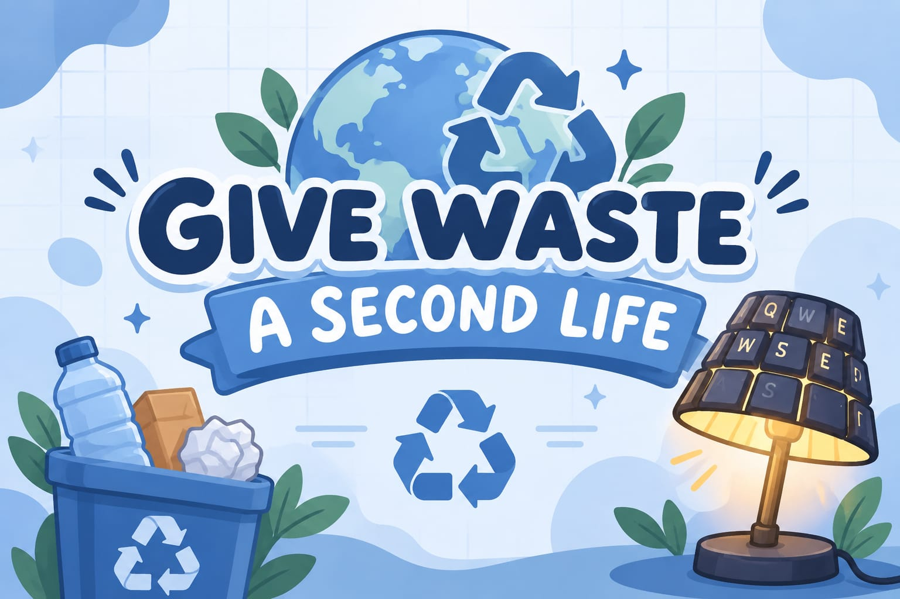
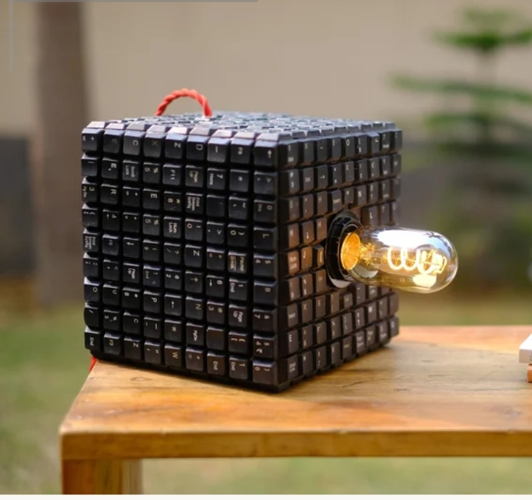
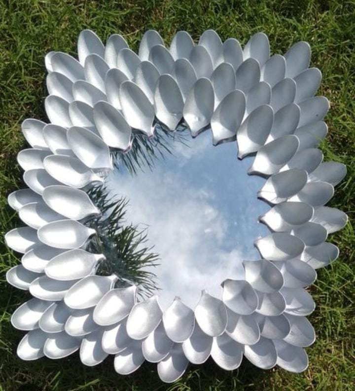
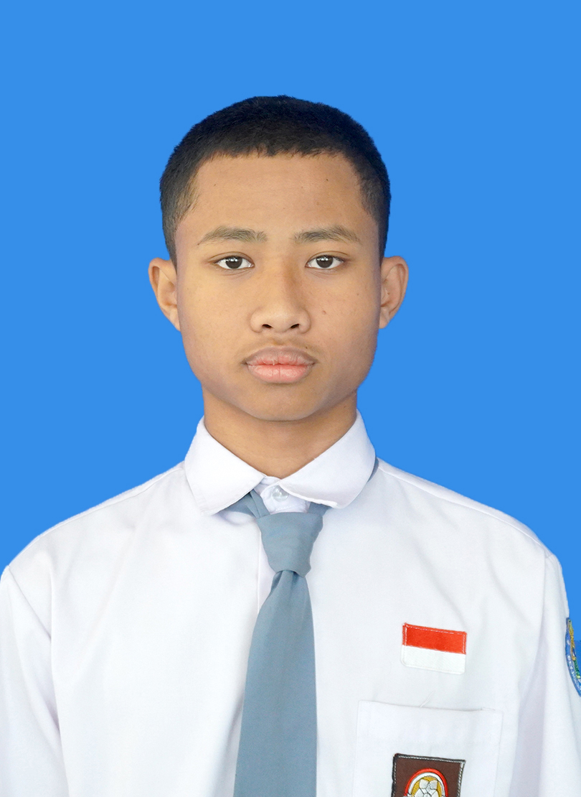
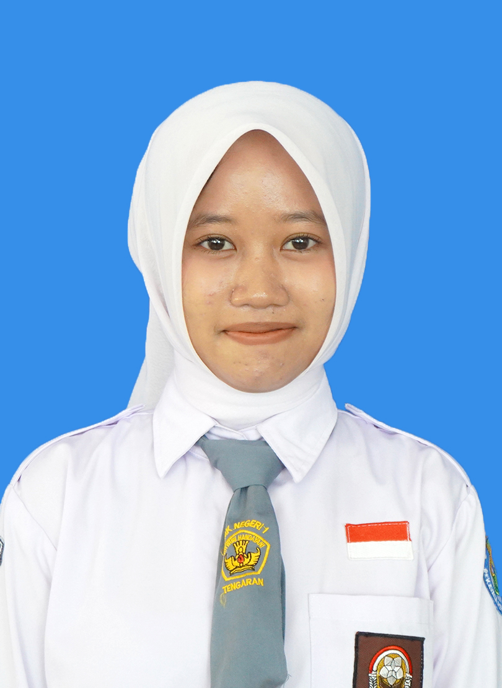
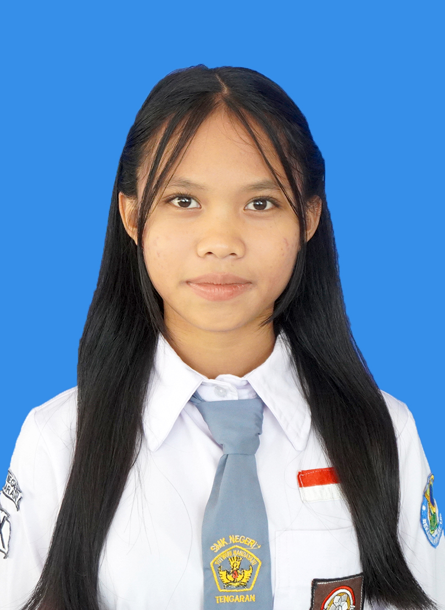

Perkuat Daur Ulang
Menyediakan sistem pengumpulan dan pengolahan limbah elektronik.
Mengubah sampah menjadi sesuatu yang bernilai, kreatif, dan bermanfaat bagi masa depan melalui prinsip Reduce, Reuse, dan Recycle.

Limbah dari hardware menjadi masalah karena mengandung berbagai bahan yang berpotensi membahayakan lingkungan dan kesehatan apabila tidak dikelola dengan baik. Meningkatnya penggunaan teknologi menyebabkan limbah elektronik semakin bertambah.
Pengelolaan limbah hardware perlu dilakukan melalui berbagai cara agar sampah dapat memiliki nilai guna kembali.
Menyediakan sistem pengumpulan dan pengolahan limbah elektronik.
Meningkatkan pemahaman tentang bahaya sampah elektronik.
Memanfaatkan komponen bekas menjadi produk kreatif.
Mendorong inovasi untuk pengelolaan sampah berkelanjutan.
Ide sederhana, dampak nyata. Kenali karya yang lahir dari kreativitas dan kepedulian terhadap lingkungan.

Menjelajahi ide kreatif dalam mengubah sampah menjadi karya bernilai.
Lihat detail ↗




Mata pelajaran yang saling berkolaborasi dalam proyek Give Waste A Second Life.
MATERI
Mendesain iklan bundling produk daur ulang kolaboratif Matematika.

x = harga 1 kipas portable
y = harga 1 hiasan meja
3x+2y=160.000
2x+2y=130.000
Eliminasikan:
3x+2y=160.000(2)
2x+2y=130.000(1)
lalu persamaan 1 kurangi dengan persamaan 2
maka x=30.000
Subsitusikan
2(30.000)+2y=130.000
60.000+2y=130.000
2y=130.000-60.000
y=70.000:2
y=35.000
x=30.000, y=35.000
1 Lampu portable Rp.30.000 dan 1 Hiasn Meja Rp.45.000

x = kipas portabel
y = lampu tidur otomatis
x+2y=175.000
2x+y=280.000
Eliminasikan:
x+2y=175.000(x3)
2x+y=280.000(x2)
3x+6y=525.000
4x+6y=560.000
lalu persamaan 1 kurangi dengan persamaan 2
maka -x=-35.000 x=35.000
Subsitusikan
x+2y=175.000
35.000+2y=175.000
2y=175.000
2y=140.000
y=140.000:2
x=70.000
x=35.000, y=70.000
kipas portabel Rp.35.000 dan lampu tidur otomatis Rp.70.000

x= jam dinding
y= tempat pensil
x+2y=120.000
2x+y=135.000
Eliminasikan:
2x+4y=240.000(5)
2x+y=135.000(1)
lalu persamaan 1 kurangi dengan persamaan 2
maka y=35.000
Subsitusikan
x+2y=120.000
x+2(35.000)=120.000
x+70.000=120.000
x=120.000-70.000
x=50.000
x=50.000, y=35.000
1 jam dinding Rp.50.000 dan 1 tempat pnsil Rp.35.000
Menulis teks laporan hasil observasi secara logis dan sistematis.
Limbah elektronik merupakan sisa perangkat elektronik yang sudah tidak digunakan atau mengalami kerusakan. Salah satu contohnya adalah keyboard komputer bekas. Jika tidak dikelola dengan baik, limbah elektronik dapat menumpuk dan mencemari lingkungan. Oleh karena itu, diperlukan kreativitas untuk memanfaatkan kembali barang bekas menjadi produk yang berguna.
Salah satu bentuk pemanfaatan limbah elektronik adalah mengubah keyboard bekas menjadi lampu hias. Produk ini dibuat dengan memanfaatkan bagian keyboard sebagai bahan dekorasi yang memiliki tampilan unik. Proses pembuatannya dimulai dengan membersihkan keyboard, menyusun bagian-bagiannya, kemudian memasang komponen pencahayaan dengan memperhatikan keamanan.
Lampu hias dari keyboard bekas memiliki beberapa manfaat, yaitu mengurangi limbah elektronik, meningkatkan kreativitas, dan menghasilkan produk yang memiliki nilai jual. Produk ini juga menerapkan prinsip 3R, khususnya Reuse, karena memanfaatkan kembali barang yang sudah tidak digunakan menjadi benda baru yang lebih bermanfaat.
Berdasarkan hasil observasi, lampu hias dari keyboard bekas merupakan salah satu inovasi kreatif dalam mengatasi permasalahan limbah elektronik. Produk ini membuktikan bahwa barang bekas masih dapat dimanfaatkan menjadi sesuatu yang menarik dan bernilai ekonomi. Dengan menerapkan prinsip 3R, kita dapat ikut menjaga kebersihan dan kelestarian lingkungan.
Limbah elektronik merupakan sisa barang elektronik yang sudah tidak digunakan atau mengalami kerusakan. Salah satu contohnya adalah keyboard komputer bekas. Keyboard yang sudah tidak berfungsi sering kali dibuang dan menjadi sampah elektronik. Padahal, beberapa bagian keyboard masih dapat dimanfaatkan menjadi barang baru. Salah satu bentuk pemanfaatannya adalah dengan mengolah limbah keyboard bekas menjadi produk Keylight, yaitu lampu hias kreatif yang menggunakan komponen keyboard sebagai bahan dekorasinya.
Proses pembuatan Keylight diawali dengan mengumpulkan keyboard bekas yang sudah tidak digunakan. Keyboard tersebut kemudian dibongkar untuk mengambil bagian-bagian yang masih bisa dimanfaatkan, seperti tombol-tombol dan bagian casing. Selanjutnya, komponen yang telah dipilih dibersihkan agar terbebas dari debu dan kotoran.Setelah bahan siap, tombol-tombol keyboard disusun sesuai pola dan desain yang telah direncanakan. Bagian tersebut kemudian dirangkai dengan bahan tambahan sebagai kerangka produk. Selanjutnya, dipasang komponen lampu sebagai sumber pencahayaan. Setelah seluruh bagian terpasang, dilakukan pemeriksaan untuk memastikan Keylight dapat berfungsi dengan baik dan memiliki tampilan yang menarik.
Hasil dari pengolahan limbah keyboard bekas ini adalah produk Keylight yang dapat digunakan sebagai lampu hias atau penerangan tambahan. Produk ini memiliki ciri khas berupa penggunaan tombol-tombol keyboard yang memberikan kesan unik dan modern.Selain menghasilkan produk yang bermanfaat, pengolahan ini juga memberikan dampak positif bagi lingkungan. Limbah keyboard yang sebelumnya tidak terpakai dapat dimanfaatkan kembali sehingga jumlah sampah elektronik dapat dikurangi. Kegiatan ini juga melatih kreativitas, keterampilan, dan kemampuan berinovasi dalam menciptakan produk dari barang bekas.
Pengolahan limbah keyboard bekas menjadi Keylight merupakan salah satu bentuk kreativitas dalam memanfaatkan barang yang sudah tidak terpakai. Melalui proses pengolahan yang tepat, limbah elektronik dapat diubah menjadi produk yang memiliki fungsi, keindahan, dan nilai ekonomi. Oleh karena itu, pemanfaatan limbah keyboard bekas menjadi Keylight dapat menjadi salah satu alternatif untuk mengurangi sampah elektronik sekaligus meningkatkan kepedulian terhadap lingkungan.
Limbah komponen komputer bekas merupakan sampah elektronik yang sudah tidak digunakan. Jika dibuang sembarangan, limbah tersebut dapat mencemari lingkungan. Oleh karena itu, keyboard bekas dapat diubah menjadi produk berguna. Seperti keylight atau lampu hias.
Tujuan Observasi:
Ditemukan keyboard bekas yang sudah tidak digunakan. Tombol tombol keyboard dapat dimanfaatkan sebagai bahan utama pembuatan keylight dengan tambahan lampu dan bahan pendukung lainnya
Cara Pengolahan:
Reduce: Mengurangi sampah elektronik dengan memanfaatkan keyboard bekas.
Reuse: Menggunakan kembali tombol keyboard yang masih layak.
Recycle: Mengolah keyboard bekas menjadi lampu hias.
Limbah komputer bekas dapat dimanfaatkan kembali melalui prinsip 3R (Reduce, Reuse, Recycle) sehingga mengurangi sampah elektronik dan menjaga lingkungan.
Menulis text report secara logis dan sistematis.
Electronic waste is one of the environmental problems caused by technological development. Many electronic devices, such as keyboards and computers, are no longer used and become waste. If not managed properly, electronic waste can harm the environment. Therefore, reusing old electronic materials is a good solution.
A decorative lamp made from a used keyboard is an example of a creative product. The used keyboard is cleaned and its parts are arranged into a unique decoration. After that, a lighting component is installed carefully to create a functional and attractive lamp.
This product has several benefits. It helps reduce electronic waste, develops creativity, and creates economic value. It also applies the 3R principle, especially Reuse, by turning unused materials into useful products.
In conclusion, a decorative lamp made from a used keyboard is a creative way to reuse electronic waste. It shows that old electronic materials can become useful and valuable products. By applying the 3R principle, we can help protect the environment and create a cleaner future.
Electronic waste is discarded electronic equipment that is no longer used or has been damaged. One example is a used computer keyboard. Keyboards that no longer function are often thrown away and become electronic waste. However, some parts of keyboards can still be reused to create new products. One way to reuse them is by processing used keyboard waste into a Keylight product, which is a creative decorative lamp that uses keyboard components as its decoration.
The process of making Keylight begins with collecting used keyboards that are no longer in use. The keyboards are then disassembled to take useful parts, such as the keys and the casing. After that, the selected components are cleaned to remove dust and dirt. Once the materials are ready, the keyboard keys are arranged according to the planned pattern and design. The parts are then assembled with additional materials to form the product's frame. Next, a lighting component is installed as the source of illumination. After all the parts have been assembled, the product is checked to ensure that the Keylight works properly and has an attractive appearance.
The result of processing used keyboard waste is a Keylight product that can be used as a decorative lamp or additional lighting. This product has a unique characteristic because it uses keyboard keys as decorations, giving it a modern and creative appearance. Besides producing a useful product, this recycling activity also has a positive impact on the environment. Previously unused keyboard waste can be reused, helping reduce the amount of electronic waste. This activity also develops creativity, skills, and innovation in creating products from recycled materials.
Processing used keyboard waste into Keylight is a form of creativity in reusing unused materials. Through proper processing, electronic waste can be transformed into a product that has practical functions, aesthetic value, and economic potential. Therefore, turning used keyboards into Keylight products can be an alternative way to reduce electronic waste while increasing environmental awareness.
Used computer components are electronic waste that are no longer used. If disposed of carelessly, this waste can pollute the environment. Therefore, it is important to reduce and process electronic waste properly.
Observation Objectives:
Several used computer components were found, such as cables, fans, keyboards, mice, motherboards, and CPU cases. Components that still work can be reused, while damaged components can be recycled.
Waste Processing Methods:
Benefits:
Used computer components can be reused through the 3R principles (Reduce, Reuse, Recycle). These methods help reduce electronic waste and protect the environment.
Bersama menciptakan perubahan melalui kreativitas.

X PPLG 1 (19)
Email Anggota
X PPLG 1 (31)
Email Anggota
X PPLG 1 (36)
Email AnggotaKalau ada saran dan pertanyaan, langsung saja kirim pesan kepada kami.
Alamat: Jl. Darun Na'im, Karangduren, Kec. Tengaran, Kabupaten Semarang, Jawa Tengah 50775
Email: viorentina.p26138@satamail.my.id
WhatsApp: 0857-2527-2803